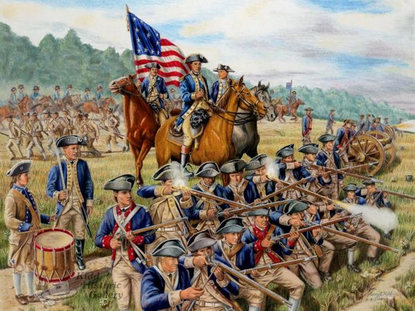
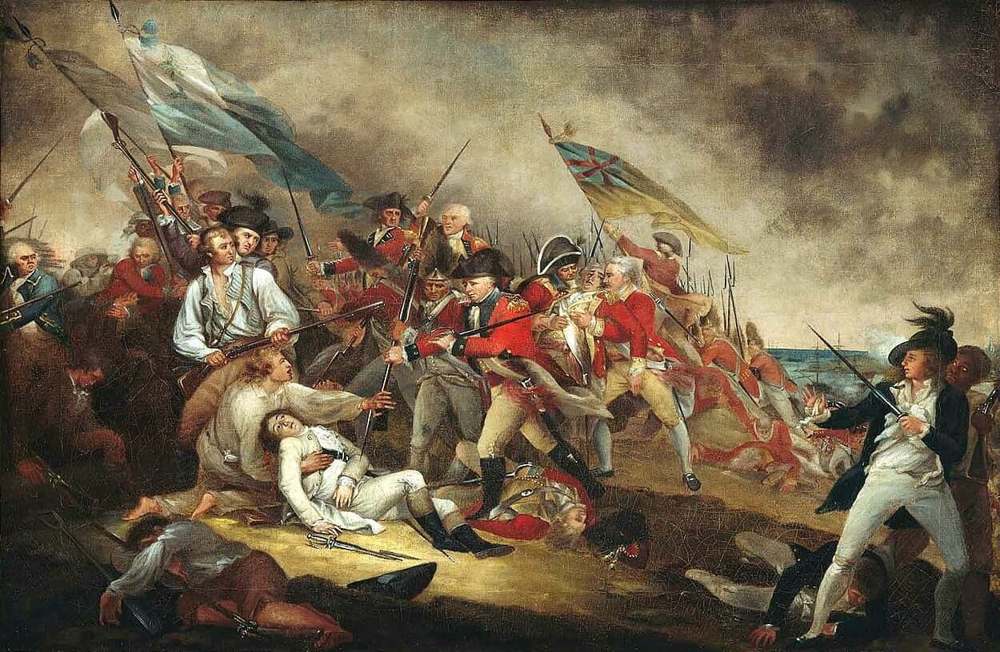
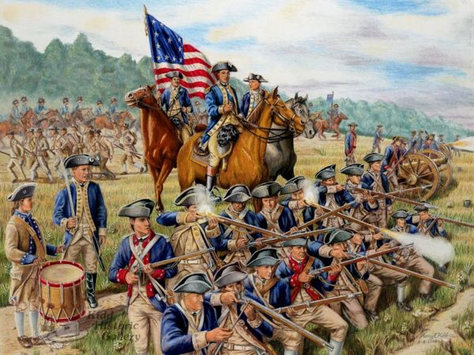
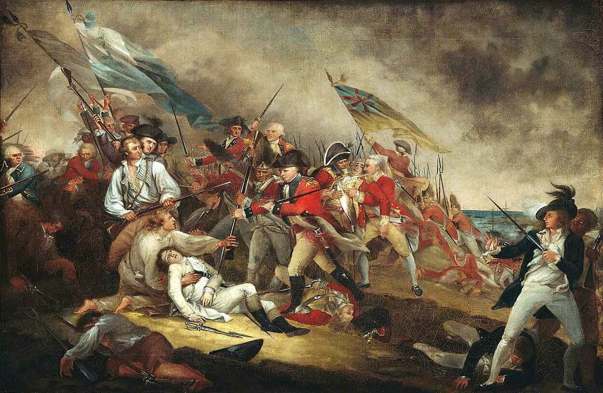

Американска революция

Тип:
Революция
Време:
1765-1783
Революция
(англ. Американската революция (на английски: American Revolution) е колониално въстание (в марксистката традиция — буржоазна революция), възникнало между 1765 и 1783 г.на територията на британските колонии в Северна Америка. Като военен съюз с Франция, колонисти, спечелили съкрушителна за столица на победа във Войната за независимост (1775-1784), главнейшим в резултат на която беше провъзгласяването на Съединените Щати и признаване на тяхната пълна и безусловна независимост от британската корона. Континентален конгрес на 1765 г., образовани, по причина на, като в същата година, Акт за гербовом събиране, е обявен на принципа "няма данъци без представителство", който отхвърля правомощията на английския парламент налагане на колония всички данъци поради липса на представители на последните в този руководящем орган. Подобни протести упорито се умножават до Бостънското клане (1770) и изгарянето на британския митнически кораб "Гаспи" (англ. Gaspee) близо до Роуд Айлънд (1772). Тези две събития бяха последвани от още едно — не по-малко значимо-Бостънско чаено парти (1773). Отговорът на британската страна беше затварянето на пристанището в Бостън и приемането на редица наказателни мерки срещу колонията в Масачузетския залив, които всъщност отмениха правото й на самоуправление. Въпреки това, други колонии започнаха сплачиваться около Масачузетс, и вече в края на 1774 г. в континенталната част на конгреса група колониални лидери постави своето собствено правителство с цел да се координират бъдещето на устойчивост на обединеното кралство; другата част от населението продължава верни на короната, след получаване на името на лоялистов или тори. Напрежението в американско-британските отношения достига своя връх на 19 април 1775 г., когато войниците на крал Джордж се опитват да унищожат запасите от колониални войски в Лексингтън и Конкорд. Впоследствие конфликтът прераства във война, в която американците (а по-късно и френските им съюзници) се борят с англичаните и лоялистите в така наречената война за независимост (англ. American Revolutionary War или American War of Independence). Във всяка от Тринадесетте колонии са формирани свои провинциални конгреси (англ. Provincial Congresses), които поеха властта на бившето колониално правителство и потискаха лоялистките настроения. Те бяха наети от Континенталната армия, водена от генерал Дж. Вашингтон. На 2 юли 1776 г. Конгресът обявява Джордж III за тиранин, който потъпква всяко право на колонистите като англичани (т.е. като свой народ). Също така Конгресът обявява свободата и независимостта на колониите. Континенталната армия изгони английските войници от Бостън през март 1776 г., но същото лято до края на войната загуби Ню Йорк и стратегическото си пристанище. Британският кралски флот окупира пристанищата и за кратко време завладява американските градове, но британците не успяват да разбият армията на Вашингтон. През зимата на 1775-1776 г. милициите се опитват да нахлуят в Канада, за да завладеят британската провинция Квебек, както и да присъединят франкоканадците към войната от страна на Тринадесетте колонии. През октомври 1777 г.американците печелят битката при Саратога. Франция влезе във войната като съюзник на САЩ, разполагайки с голяма армия и флот. Военни действия перенеслись на територията на южните американски щати, където Чарлз Корнуолис през 1780 г. поставили Чарлстън и накарал до капитулацията на армията на генерал Линкълн; но той не успя да привлече достатъчно доброволци от броя на лоялистов за ефективен контрол над територията. И накрая, през есента на 1781 г.Обединените американски и френски сили обкръжават Корнуолис в Йорктаун. Капитулацията на Корнуолис всъщност сложи край на войната. Парижкият мир е подписан на 3 септември 1783 г., завършвайки войната и потвърждавайки пълното отделяне на новата нация от Британската империя. Съединените щати завладяха почти цялата територия на изток от река Мисисипи и на юг от Големите езера, като британците запазиха контрола над Канада, а Испания пое Флорида. Сред резултатите от революцията трябва да се отбележи създаването на Конституцията на САЩ и създаването на относително силно федерално правителство, разделено на три клона: законодателна, изпълнителна и съдебна. Революцията също така доведе до масова миграция на около 60 000 лоялисти в други британски земи, особено в Канада.

 



Източници:
wikipedia.org;